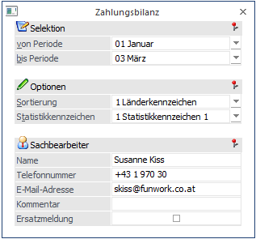
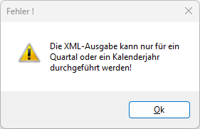
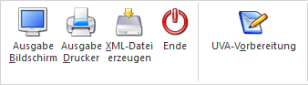

Die Zahlungsbilanz ist eine Zusammenfassung der "grenzüberschreitenden Dienstleistungen" und muss quartalsmäßig oder jährlich an die OeNB bzw. die Statistik Austria gemeldet werden, wobei die Meldung bis zum 15. des nächsten Monats eines Quartals bzw. bis 15. Februar des dem Kalenderjahr nachfolgenden Jahres erfolgen muss.
Weitere Informationen dazu sind z.B. bei der Statistik Austria (https://www.statistik.at/ueber-uns/erhebungen/unternehmen/grenzueberschreitender-dienstleistungsverkehr) nachzulesen.-
Vorbereitung
Damit eine Zahlungsbilanz ausgegeben werden kann, müssen die entsprechenden Erlös- bzw. Aufwandskonten mit den dazu passenden Dienstleistungsarten versehen werden. Dabei muss ggf. darauf geachtet werden, dass neue Erlös- bzw. Aufwandskonten angelegt werden, sofern mehrere Dienstleistungsarten verwendet werden.
Durchführung
Die Zahlungsbilanz wird über den Menüpunkt
1 Auswertungen
1 Zahlungsbilanz
aufgerufen.

Selektion
Ø von
Periode
bis Periode
Aus der Auswahllistbox kann der Monat bzw. können die Monate ausgewählt werden, für die die Auswertung durchgeführt werden soll.
Hinweis
Wenn die Meldung für die Übermittlung erzeugt werden soll, dann muss entweder ein Quartal oder das gesamte Jahr ausgewählt werden. Wenn das nicht der Fall ist, wird eine entsprechende Meldung ausgegeben:

Optionen
Ø Sortierung
Aus der Auswahllistbox kann gewählt werden, mit welcher Sortierung die Auswertung erfolgen soll.
ü Länderkennzeichen
Bei dieser
Einstellung erfolgt die Sortierung nach dem im Personenkontenstamm gespeicherten
Länderkennzeichen.
ü Dienstleistungsart
Bei dieser
Einstellung erfolgt die Sortierung nach dem in den Sachkonten hinterlegten
Dienstleistungsarten.
Ø Statistikkennzeichen
Aus der Auswahllistbox kann gewählt werden, welches der 2 im Sachkontenstamm hinterlegbaren Kennzeichen ausgewertet werden sollen.
Sachbearbeiter
In diesem Bereich können noch zusätzlich Informationen hinterlegt werden, die bei der Meldung verwendet werden:
Ø Name
Ø Telefonnummer
Ø E-Mail-Adresse
In diesen Feldern werden die Daten des Sachbearbeiters hinterlegt, damit ggf. auftretende Rückfragen an die entsprechende Stelle gerichtet werden können. Diese 3 Felder werden gespeichert, sodass sie nicht jedes Mal neu eingegeben werden müssen.
Ø Kommentar
Hier kann noch eine Notiz bzw. Anmerkung hinterlegt werden, wobei diese nur dann mit übermittelt wird, wenn es sich bei der Meldung um eine Ersatzmeldung handelt.
Ø Ersatzmeldung
Diese Option kann dann gesetzt werden, wenn eine bereits durchgeführt Meldung nochmals übermittelt werden soll. Damit wird dann die ursprüngliche Meldung verworfen. Wenn die Option "Ersatzmeldung" aktiviert ist, dann wird auch der Text, der im Feld "Kommentar" hinterlegt wurde, mit übergeben.
Buttons

Ø Ausgabe auf Bildschirm
Mit diesem Button wird die Ausgabe auf Bildschirm gestartet.
Ø Ausgabe auf Drucker
Damit wird die Auswertung am Drucker ausgegeben, der Ausdruck ist nicht für das amtliche Formular vorgesehen.
Ø XML-Datei erzeugen
Wenn dieser Button aktiviert wird, wird eine XML-Datei erzeugt, die dann in weiterer Folge bei der Statistik Austria hochgeladen werden kann. Voraussetzung dafür ist allerdings, dass zuvor eine UVA-Vorbereitung durchgeführt wurde. Damit werden dann alle relevanten Daten für die Meldung ermittelt.
Sind dabei Buchungen vorhanden, für die noch keine "UVA-Vorbereitung" durchgeführt wurde, wird in die "UVA-Vorbereitung" gewechselt, um diese durchzuführen.
Sind alle Buchungen "vorbereitet", wird die XML-Datei erzeugt, wobei dazu im Programmverzeichnis ein Unterverzeichnis
Ø Zahlungsbilanz
erstellt wird (sofern es noch nicht vorhanden ist). In diesem Verzeichnis wird dann eine Datei mit dem Namen
Ø ZABIL_MMMM_YYYY_QX.XML
erzeugt. Handelt es sich um eine Jahresauswertung, dann wird eine Datei mit dem Namen
Ø ZABIL_MMMM_YYYY
erstellt.
MMMM steht für die Mandantennummer
YYYY steht für das Wirtschaftsjahr
X steht für das Quartal
Wenn die Meldung mehrfach erzeugt wird, wird eine bereits vorhandene Datei überschrieben. Wurde die Datei erzeugt, wird eine entsprechende Meldung ausgegeben.
Ø ENDE-Button
Durch Drücken der ESC-Taste wird das Fenster geschlossen.
Ø UVA-Vorbereitung
Durch Anklicken des Buttons kann eine UVA-Vorbereitung durchgeführt werden.